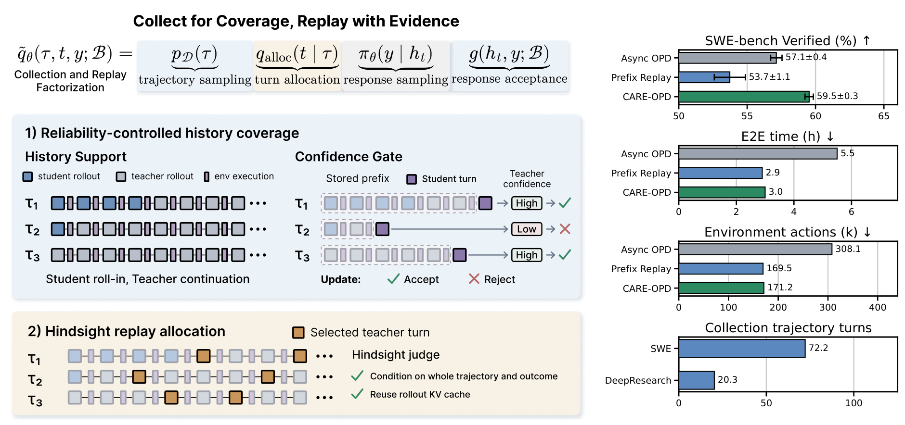
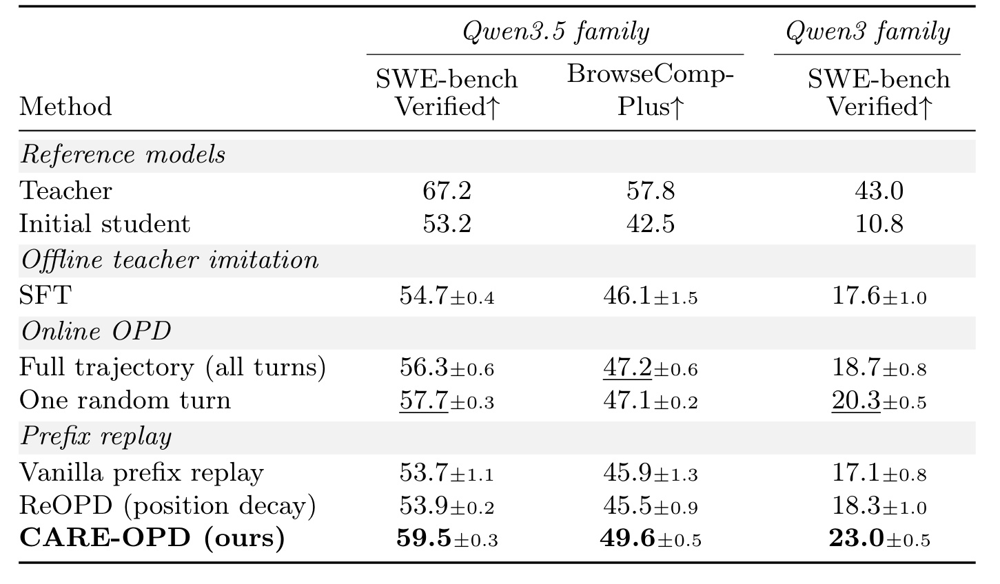
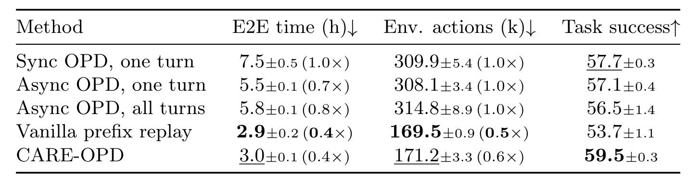
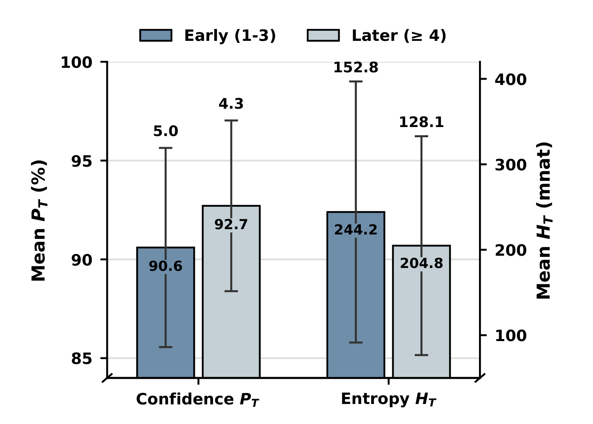
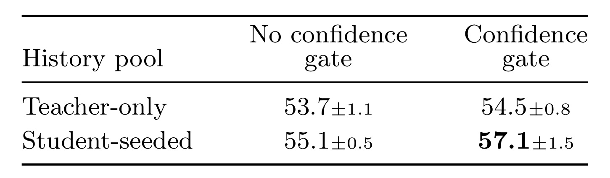
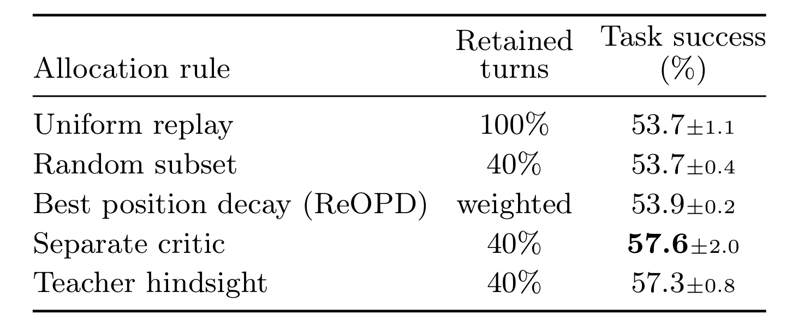
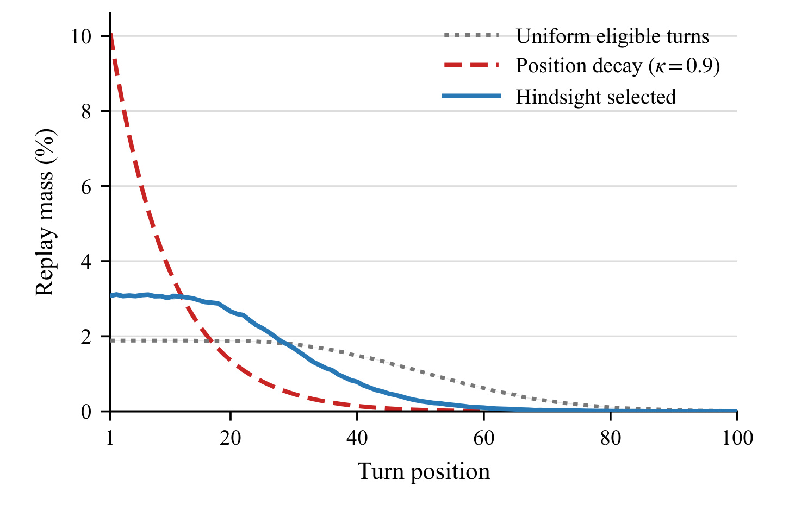
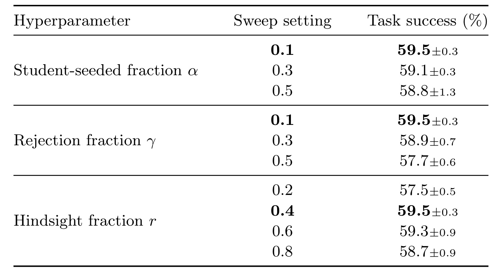

CARE-OPD：用学生经历拓宽采集，用执行证据分配回放
上海交通大学的 Haowen Hou 与上海创智学院、京东合作者研究了长程智能体的在策略蒸馏。CARE-OPD 在采集时让冻结学生先行动一小段，再交给教师收尾。它从通过验证的完整轨迹挑选教师回合，训练时让当前学生重新生成响应，并根据教师分布决定是否纳入梯度。论文于北京时间 2026 年 11 月 26 日提交并见于 arXiv 当日公告，本轮未核验独立代码仓库。论文入口
长程智能体的在线在策略蒸馏要不断取得新的环境轨迹，更新经常等待较慢的交互。前缀回放能减少这种依赖，但只收集教师轨迹会漏掉学生行动造成的历史，扩大覆盖又可能遇到教师缺少把握的状态。固定位置的抽样规则也容易错过出现在不同深度的关键决策。
1. 背景和问题
1.1 交互历史决定后面的训练样本
在静态问答里，学生可以直接对同一问题采样答案，然后由教师在每个生成位置给出更细的分布信息。长程智能体眼前的历史还受自己先前行为影响。它先选择一个工具或提出一次查询，收到观察，再决定继续探索、换方向还是提交结果。只要最早几个回合中的动作有变化，后来收到的证据就可能完全不同。学生需要在自己真正有机会面对的历史上学习，教师也必须在同一历史下对学生的下一段文本提供评分。长程任务因此有两个采样层次。第一层确定此前动作如何进入环境并返回新观察，第二层确定给定这些观察后当前学生会生成什么。把二者统称为在线采样，会掩盖哪个环节更贵、哪个环节还能在回放中保留。
以深度研究为例，连续几次检索可能只取得同一来源的转述。教师通常会较早打开更直接的资料，纯教师数据于是较少出现只有多级转述、还缺原始证据的中间状态。学生独立执行时若刚好处于这种历史，需要练习的是看完这些返回之后如何重新检查出处。一轮重新采样可以产生这种改进动作，但前提是池中已有包含相关返回的历史。假如库存里全是已经打开可靠来源的教师历史，换成最新学生来写下一句话也无法补回那些缺失的观察。软件工程智能体同样会因为先检验了不同的假设，面临全然不同的文件内容、测试反馈以及剩余上下文。长链任务从第一处行动分岔之后一般很难用某一条标准轨迹代表所有合法路径。
完全在线 OPD 会用每次更新时的学生策略真实运行任务，取得现阶段能够到达的历史，因此减小了固定库存带来的偏移。不过调用环境涉及过程隔离、资源占用、上下文重建或外部请求等待。有的任务很快结束，有的会反复使用工具，整条数据链路的同步运行速度取决于慢任务和队列。异步调度可减轻更新等待，但每次需要的交互仍然发生，且队列里的轨迹可能由稍早的学生产生。若把每轮监督的工作量和每个环境的真实动作数分开记录，就能理解为何更高的训练并行度通常不会按相同比例节省环境资源。论文表 2 分别报告这两项，正好能对照这个差别。
1.2 回放池同时受覆盖与监督质量约束
普通前缀回放把环境执行集中到前一阶段。一条完整轨迹可以截出多个历史供后续反复采样，学生每次只生成接下来的一个响应。即使训练过程中模型变了，保存的历史也可以复用，减少重新触发环境的数量。这样做还保留了当前学生对选定前缀的采样，有利于在模型真正会写出的令牌上下文中读取教师分布。环境视角的在线属性则变窄了。当前学生这轮提出的动作不执行，因此无法在同一次更新里获得它所导致的后续观察，也不会进一步访问学生的新分支。这一边界决定对性能的观察必须落回完整任务，不能用回放过程很快来替代验证任务行为。
教师历史通常较整齐，工具参数、搜索证据和执行顺序接近教师熟悉的分布，从这些前缀继续生成时教师分布较集中。不过在学生进入错误方向后，这些路径未必还可用。若让学生产生初始历史，获得的条件分布能覆盖一些见不到的状态，但教师也可能因信息缺失、错误执行或路径混乱而无法给出稳定的下一个选择。作者把这两个问题分别记为历史覆盖和响应接受。更广的历史支持描述有哪些状态可抽到，接受机制则决定某次当前学生生成后教师究竟有没有足够把握。两者在训练因果链中先后出现，可以通过固定一个因素再改变另一个检查相互作用。
置信还涉及一个判断范围。教师分布变集中时，它可以给出清晰的令牌监督，却仍可能在工具参数、技术结论或证据解读上出错。一段合规文本的语法常见度也能提高逐令牌置信度，而真正属于关键决定的几个令牌可能仍然不确定。相反，正确动作有多个等价表述时，概率分散可能只是措辞多样，并不意味着教师不能指导。论文观察的是教师平均最高令牌概率，在训练中按批内分位拒绝尾部。它保留了这项分数作为相对管控工具的用途，并把任务成败放到另一个可执行评测里。
1.3 后半程的关键行动不服从固定位置
前缀池建立之后，训练仍需在每条轨迹里选有限的学习目标。前面几个回合经常包括任务理解、环境准备和初步探索，位置优先略偏前有合理性。若路径只有短短几轮，这一倾向造成的覆盖损失也较小。多轮工程和研究任务的行为证据跨得更长。某段深研答案在第二十轮才发现不同来源互相冲突，关键行动是追加核对。同理，一条较长的工程轨迹可能到第四十轮才确定现有假设失败，并通过两个后续检查完成纠正。每减掉一个后位选中概率都会让此类情形更少进入训练，其中有些正是决定最终任务成败的动作部分。
论文将位置规则和证据选择在同一回放预算下分开。对于教师已经成功完成的轨迹，可以等所有观察获得后，再问哪些已有动作确实得到后续执行支持。这样的标注偏好可验证的诊断、纠正和确认。有结果并不意味着每一步都合理，因而评审需要把回合与支持它的后续观察联系起来。其结果也可以是局部失败的诊断推动了后来成功。后验访问只发生在采集结束后的选择阶段，训练仍然要从选中的原始前缀做单回合预测，避免利用未来结果直接降低预测难度。
这项研究的证据基线有三个层次。主结果比较多种同起点训练配方，回答整体方法能否改善公开任务得分。效率表把采集、轨迹筛选和更新时间一起列入，回答收益是否依赖被省略的准备成本。受控试验再把学生播种、门控和证据选择拆开，回答扩大覆盖是否需要可靠性保护，以及稀疏采样怎样在轨迹中更集中地使用计算。最终所关心的总量是执行一段真实任务前后的结果与资源，并需要知道固定历史带来的分布近似何时仍然有效。
2. 方法
2.1 从环境回合到前缀回放
设任务为 $x$，轮到模型第 $t$ 次生成时可以看到最初问题和交替出现的工具返回与模型动作。最新的工具观察也包含在历史 $h_t$。策略先生成完整响应 $a_t$，环境才根据它产生下一观察。完整在线蒸馏在当前学生产生的环境轨迹上，把每个学生令牌位置的反向 KL 平均起来，对任务和轨迹求期望。论文式（1）写成如下形式。
符号解释： $p(x)$ 为任务分布，$p_\theta(\cdot\mid x)$ 包含学生逐轮行动和环境转移，$\tau$ 是完整轨迹。$N_\tau$ 只计学生生成的令牌，$s_k$ 是第 $k$ 个令牌之前的上下文。$\pi_\theta$ 与 $\pi_T$ 分别是当前学生和固定教师的条件分布，$D_{\mathrm{KL}}$ 的方向由学生指向教师。工具结果为上下文的一部分，无需把其每个令牌作为学生动作学习。式子强调了监督发生在学生到达的状态上。若一轮工具调用后来失败，失败反馈会跟在动作之后，成为再下一轮的观察。在线方法要取得此处的真实反馈，必须执行动作。
前缀回放先由固定快照运行环境并保存历史，训练时从某一记录截到 $h_t$，再让最新学生采样一个新响应 $y$。式（2）对这一响应内的令牌计算同方向的蒸馏损失。
符号解释： $y$ 有 $L$ 个令牌，$y_{<j}$ 是它的前 $j-1$ 个令牌，$h_t$ 是环境动作发生之前存下来的历史。$\pi_\theta$ 每次采样时已经反映最新一次更新，$\pi_T$ 根据同样的前缀与学生已写令牌评分。当前更新在 $h_t$ 内体验的是旧策略保存的观察，在这一响应内才体验当前学生会写出的分布。若把 $y$ 当作日志中的教师答案，会把回放误读成 SFT。文中 $y$ 是新的候选行动，只用于学习，没有交给环境获得反馈。

图中最上方把流向更新的训练质量分解为四个乘积因子。池中轨迹先给一个历史来源，再有分配器挑具体位置，学生在原前缀上采样，教师分布判断当前样本能否用于参数更新。左上方的深蓝块来自冻结学生，浅色块来自采集教师，空白间隔表示真实环境动作带来的观察。三条轨迹混合不同来源，说明池可以容纳纯教师与学生先行两种形态。右侧紫块在原前缀上重新生成，因而能与已有轨迹中同一位置的教师行动不同。中间一条低置信样本被排除，排除发生在采样之后，这条历史依然可以在以后再次被抽到。左下方黄色块才是事后选出的教师回合，评审看到保留轨迹的后续执行结果，更新阶段拿到的是每个黄色块之前真正发生过的前缀。在调度顺序上，位置标注随采集结束执行一次，响应采样和置信门随每次训练反复执行，图的上下排按机制展示，不意味着先执行门再决定回放位置。右侧的三项横条来自 Qwen3.5 软件工程配置，分别是端到端成功率、训练总时长和环境动作数，45% 缩短使用异步单回合作为分母。底部 72.2 与 20.3 是所收集的软件工程和深研轨迹的平均回合数，不能与在线学生另一处 84.9 回合的统计直接混成一个负载规模。
这种分工由式（3）概括，某条训练候选的未归一化抽样质量由历史来源、位置、学生动作及接受共同决定。
符号解释： $D$ 为已保留的轨迹池，$p_D(\tau)$ 为从池中抽到 $\tau$ 的概率，$q_{\mathrm{alloc}}$ 为在该轨迹内选择回合 $t$ 的分布。$\pi_\theta(y\mid h_t)$ 是当前学生产生整段 $y$ 的概率，$g$ 是依赖当前小批次 $B$ 的接受门。$\widetilde q_\theta$ 是有效训练质量，门会将其中一部分置零，因而没有直接归一化为概率。只更换 $p_D$ 无法控制样本通过率，反过来门控也不能给池中从未出现过的历史提供监督。论文让历史来源、位置选择与随后接受分别承担覆盖、证据和稳定性三个功能。
2.2 学生前缀扩展覆盖与教师置信门控
采集以任务为单位随机决定谁先行动。抽到学生播种的任务，由冻结起点 $\pi_{\theta_0}$ 执行从一到上限均匀抽取的若干回合，直到教师接手。若采集未通过终局验证，或者学生在教师接手前结束而没有任何可选教师回合，算法丢弃轨迹。学生行动虽不成为可选监督回合，但它引出的工具观察和上下文在后续继续保留。比例 $\alpha$ 是启动采集时的播种概率，经终局验证筛选后，两类轨迹的通过率可能不同，不能由 $\alpha$ 直接反推出保留池中学生前缀的份额。
符号解释： $i$ 编号轨迹，$z_i=1$ 表示学生先行，$K_i$ 是接手前的回合数，$K_{\max}$ 为任务族的采集上限。冻结学生 $\pi_{\theta_0}$ 只在标为播种且步号未超过 $K_i$ 时负责环境动作，其他情形由教师 $\pi_T$ 负责。这相当于在一批任务里用学生造成可控规模的分岔，同时要求教师能从其中一些分岔继续完成。附录用观察到的平均采集轨迹长度设置上限，Qwen3.5 的工程与深研分别为 72 和 20，未逐格搜索这个上限。
模型置信只在当前学生生成一段 $y$ 后评估。教师沿学生已经写出的令牌逐位置给条件分布，取每处最可能令牌的概率，再对整段求平均。
符号解释： $h$ 为本次回放的历史，$\mathcal V$ 是令牌词表，$v$ 是其中一个令牌，$p^T_j(v)$ 表示教师在第 $j$ 个学生生成位置给 $v$ 的条件概率。$P_T$ 取每个分布的峰值，衡量教师对自己的首选有多集中。它不会查看 $y_j$ 是否是这一首选，也没有执行 $y$，因此无法给出学生动作正确概率。教师打分是蒸馏计算本身已需要的步骤，求峰值均值不再要求一次独立的轨迹推理。
符号解释： $\gamma$ 为计划拒绝的低置信分数比例，$\tau_\gamma(B)$ 是该批 $P_T$ 的 $\gamma$ 分位，$\mathbf 1$ 对条件真返回一。均值较低的响应被拒绝梯度，而被选前缀仍留在池中。如果全批置信都很低，只要过了相对分位仍然会被接收。因此这个门更适合在同一采样协议下维持更新样本数，难以对跨任务的正确性给出绝对保证。分位并列时可能有超过名义比例的样本因为大于等于关系而留下。原文没有披露额外的并列决胜规则。
2.3 以完整轨迹的执行证据分配回合
设备开始训练前，每条保留轨迹都会过一遍后验选择。评审收到任务、完整轨迹、执行反馈及最终结果，判断教师哪些诊断、纠正或验证得到了后来观察的支持。作者在轨迹末尾追加一次选择请求并复用展开时教师的 KV 缓存，省去独立评审重读全文的预填充。为准确点选回合而写入的临时标识会同评审输出一起移除。实际回放上下文中没有后来的观测，训练也不需要复现选择器的文字解释。
符号解释： $\tau_i$ 是通过验证的第 $i$ 条轨迹，$E_i$ 为可选的教师回合集合，$r$ 为保留比例，$m_i$ 为向上取整后的回合数，$S_i$ 是评审选择的集合。采样先按轨迹选择再在 $S_i$ 内均匀选一个位置。同一条长轨迹因为回合多会留下较多可选位置，但其作为整体的抽中概率不因回合数直接线性上升。每轨迹固定比例也绕开了跨任务校准一个绝对重要度分数的问题。代价是每轨迹的预算无法响应任务之间的重要回合密度差异。回合很少时向上取整使实际保留率高于名义值，有多个阶段的大任务则仍可能在固定比例下漏掉有价值的后段。
2.4 采集与更新怎样串接
算法 1 的前半先执行任务，筛去未验证或没有教师阶段的轨迹，并以选中的回合集合连同原轨迹写入池。后半循环抽一批轨迹，再从每条轨迹抽一个位置。当前学生的新响应送教师得到损失和置信，将过门项汇总更新。整个训练时长还包括最初采集、验证和轨迹后验选择，不能只以优化器的用时核算。
符号解释： $b$ 为批内候选响应索引，$c_b$ 是计算出的教师置信，$q_\gamma$ 为本批分位，$A$ 表示接受集合，$\ell_b$ 为式（2）的响应损失，$\eta$ 是学习率。梯度以保留样本数 $\lvert A\rvert$ 归一，不把低置信样本的损失算入平均。一次真实采集可以支持多次这样的更新，所以环境动作从训练关键路径退出。随着学生策略移动，池仍固定在采集时的历史，通过率与后来真正执行时的覆盖都可能发生变化。一个合适的观测方法是分期保存旧历史和最新实际历史的类型、工具结果及偏离位置，再决定是否值得增加环境刷新成本。
3. 实验结果
3.1 测试对象与统一资源条件
工程轨迹从 SWE-Gym 训练划分采集，另有一百个验证任务，最终评估 SWE-bench Verified 的任务成功率。训练使用 OpenHands 默认提示与工具。深研轨迹来自五个公开问答源，经文本规范化、重复合并及实时可回答性筛选后共 16,855 个候选训练任务。作者以 DeepSeek-V4-Flash 试查是否可在统一工具环境里取得有效证据，并验证输出与参考答复是否相符。深研最终用 BrowseComp-Plus，固定 Qwen3-Embedding-8B 检索器，以 gpt-oss-20b 评答案正确性。两种任务都用 128K 上下文和 150 回合上限。同一表中工程指标按可执行任务的通过统计，深研指标则是给定检索与判别设置下的答复正确率，不能按百分比量级直接横向比较难度。
Qwen3.5 使用 9B 学生和 27B 教师，开启思考。Qwen3 使用 8B 学生和 Qwen3-Coder-30B-A3B-Instruct 教师。由于后一组原生工具调用格式不相同，作者在与评测仓库不相交的 R2E-Gym-Subset 中抽取五百个任务，请教师生成候选轨迹并保留成功样本，先对学生做一次冷启动微调。原始学生工程分数 8.6%，冷启动后的 10.8% 是 Qwen3 各训练方法共同起点。该家族在深研测试上的候选教师 17.3%、学生 12.7%，作者因差距只有 4.6 个百分点而没有训练这一设置。这个筛选缩小了结论适用面，不能认为更小的教师优势也已通过比较。
各 OPD 训练法用四台每台八块 H200 的节点，分别承担教师推理、两台学生生成、一台参数更新。学习率 $10^{-6}$，批大小 64，统一训练 60 步。异步最多允许旧四个更新步的轨迹，作者提到更陈旧时结果下降。SFT 使用 $10^{-5}$，同一批大小训练三轮。深研中生成 SFT 轨迹时使用固定抽样的 3,840 个任务，与每次 OPD 的任务预算匹配。训练方法按三个种子报告均值和样本标准差，表中没有逐种子配对显著性或任务抽样置信区间。
3.2 三个模型与任务配置的主结果

表 1 的三列数字对应 Qwen3.5 软件工程、Qwen3.5 深研、Qwen3 软件工程，行按参考模型、离线教师模仿、在线 OPD 和前缀回放分组。教师三列分别为 67.2%、57.8%、43.0%，学生起点为 53.2%、42.5%、10.8%。完整方法达到 59.5%、49.6%、23.0%，相对同列起点增加 6.3、7.1、12.2 个百分点。教师表明当前任务和支架下的参考距离仍存在，最高提升的第三列也仍比教师低二十个百分点。对使用教师较强的任务，回放更高效的结论可以成立，不能推成学生已经掌握教师级能力。该表的对照来自相同学生起点，避免把工具格式冷启动错误算到某一方法的头上。
完整回放的三个分数分别比同列最好在线法高 1.8、2.4、2.7 个百分点。普通回放的 53.7%、45.9%、17.1% 落在单回合在线 OPD 的 57.7%、47.1%、20.3% 后面，差距为 4.0、1.2、3.2 个百分点。现有教师前缀能提供廉价监督，直接使用却没有得到相近的结论。位置衰减 ReOPD 相对普通回放变化为 +0.2、−0.4、+1.2 个百分点，深研列甚至回落。监督遍历所有回合也并非总有收益，在线全轨迹与随机单回合在三个设置中差 1.4、0.1、1.6 个百分点，只有深研的全轨迹略高。报告试验时最好直接列出其训练阶段、在线或离线历史、回合选择和损失四项条件，以免把单回合本身与纯教师池的覆盖偏差混为一谈。表 1 的误差项反映三次训练的变动，未给出跨任务的独立复验。
3.3 同资源训练效率

表 2 第一列小时数覆盖取得学生模型所需的端到端过程，CARE-OPD 包含采集、后验分配与回放训练。第二列以千为单位计环境动作，所有尝试含失败采集均计数。末列对应 SWE-bench Verified 成功率。括号是相对同步单回合在线法的倍数，摘要中的 45% 和 44% 则以异步单回合的 5.5 小时、308.1 千次为分母。同步单回合需要 7.5 小时、309.9 千次，异步单回合只把时长缩至 5.5 小时，动作仍为 308.1 千次。这组数值把流水线等待与环境工作量分开。异步全回合为 5.8 小时、314.8 千次、56.5%，同步单回合成绩为 57.7%，异步单回合为 57.1%，因此切换调度后只能说同量级的任务成功率。
CARE-OPD 为 3.0 小时、171.2 千次、59.5%。用均值计算相对异步单回合减少 45.45% 时间和 44.43% 动作，成功率提高 2.4 个百分点。用同步单回合作分母可得到约 60% 的时间节省，原表的括号也约为 0.4 倍。普通回放 2.9 小时、169.5 千次、53.7%，两种回放环境调用结构相近，完整方法多 0.1 小时、1.7 千次但增加 5.8 个百分点。该差额用于衡量整套改变的净增，不能单独归给选择器一次请求。公开材料没有分别列出每个子步骤的 GPU 利用率、预填充与解码开销、不同动作的成本权重或时延分位值。新增一种较慢工具时，即使动作数相同，真实时间和成本也可能变化。训练预算评估宜单独记录环境单次耗时分布和各模块账单。
3.4 教师接手后的置信变化

图 2 用两种颜色区分教师接过后最早三个回合和第四回合起的后续部分，左纵轴以百分比读最高令牌概率的均值，右纵轴以毫纳特读熵。早期置信 90.6%，后期 92.7%，相差 2.1 个百分点。早期熵 244.2 毫纳特，后期 204.8 毫纳特，相差 39.4。图上标出离散程度，置信组为 5.0 与 4.3，熵组为 152.8 与 128.1。正文另报早期分低于 90% 的响应有 35.1%，熵高于 400 毫纳特的占 16.5%。用全部换手后回合为分母的对应值为 26.2% 与 9.3%，这个分母包含早期本身，不能误读成后期切分的比例。也不能按早三轮与后段的差直接确定置信门拒绝的是哪一批。门的阈值取决于当前小批次，评估里的固定 90% 只用于观察分布。
均值与尾部变化均指向换手初段教师分布更分散，支持在学生诱导的历史上重新检查监督可靠性。图未实际执行新放入的候选响应，也没有展示每一项温度改变与最终任务正确率的因果关系。若早期回合的工具 schema、文本格式或输入长度与后期不同，分数的部分差异也可能来自语法令牌构成。观察到的教师不确定性适合帮助查找分岔后模型遇到困难的区域，无法据此将每个低分动作判为错误。论文用以下额外指标描述教师分布整体的发散程度。
符号解释： $H_T$ 为位置平均熵，$L$ 为响应令牌数，$p_j^T$ 是教师在前缀 $h,y_{<j}$ 的条件分布，$v$ 遍历词表。对数用自然底时单位为纳特，图中用毫纳特展示。式（5）的峰值看最高一项，熵把剩余分布也计入，因此多个建议动作权重接近时熵可能增加。它在本文用于诊断而非门控输入。

表 3 的两行分别表示纯教师池和含学生播种的池，两列分别表示去掉和保留置信门。基线 53.7±1.1%，只加接受门得到 54.5±0.8%，只改历史来源得到 55.1±0.5%，两项一起 57.1±1.5%。用均值可得纯教师池上的门控增量为 0.8 个百分点，播种池上的门控增量为 2.0 个百分点，二者差 1.2。等价地，单独改善覆盖增加 1.4 个百分点，再叠加门控的组合均值增加 3.4 个百分点，超过两项单独绝对增量的简单相加。该算式可描述本配置的交互，但三种子波动下并未单列统计显著性。
这个对照将“能抽到哪种历史”和“该响应是否用于更新”分开，并说明为什么在纯教师池上测一次低置信拒绝容易低估其作用。扩池后，原本难见的历史和缺少把握的响应可能同时增多。用门控留下较稳定监督，保留库存本身的覆盖。表右下的 57.1% 仅来自此受控设置，恰好和异步在线单回合数值相同，行定义不同。完整 CARE-OPD 还有按执行证据选择回合，见主结果的 59.5%。表 3 各格分母是同协议任务成功率，不能与评估置信尾部比例相减，也不能由四格推导每个状态受益多少。
3.5 回合选择与超参

表 4 第一列是回合选择规则，第二列为每轨迹保留比例或再加权规则，第三列是任务成功率。均匀用全体可选回合为 53.7±1.1%，随机保留 40% 仍为 53.7±0.4%，固定位置衰减的最好对照为 53.9±0.2%。同样保留 40%，另调用 Qwen3.5-122B-A10B 作事后裁判为 57.6±2.0%，直接复用采集教师为 57.3±0.8%。同保留比例的随机对照使增益更接近选择内容产生的贡献，而不是减少候选数量之后的偶然变化。与均匀及随机相比，采集教师裁判均增加 3.6 个百分点。独立大裁判均值高 0.3 个百分点但种子波动更大，论文未给出明确优越性。复用方案的确定优势是无需重新完整预填充轨迹，尚缺不同长度和硬件上的裁判成本拆分。
这一对照中的 57.3% 是单项分配控制，不能与表 3 的 57.1% 直接相加。两套对照共享 53.7% 的普通回放参考，却出于不同目的独立改动配方。只有表 1 和效率表比较全套机制。固定总训练更新预算也不意味着每个回合梯度量相同，响应长度、门控和历史难度都影响实际利用。实用复现可以记录每个回放位置的尝试数、接受数和受监督令牌数，帮助判断事后选择的收益究竟来自更相关的动作，还是通过了不同数量的有效令牌。证据选择手段需结合图 3 的位置分布一起读。

图 3 横轴为绝对回合位置，纵轴为汇总后抽样概率的百分比。红虚线是位置衰减，当 $\kappa=0.9$ 时在首轮约 10% 并快速递减。灰点线为全体可选回合均匀抽样，开头约 2%，后面跟随各条轨迹是否仍有那么多回合逐步下降。蓝线是由采集教师按完整轨迹证据选择的质量，在前几轮低于红线，但比固定衰减更多地延伸至后续数十轮。蓝线并没有在每个深度都超过均匀线，较末端仍更少。均匀线本身有较长的极末端余量，说明迟到的回合是否有价值主要取决于它的行动内容，而非一概给深处更多权重。
若全部任务相同长且都有同样的可选位置，固定衰减可以简单按同一几何比控制晚回合。实际先抽轨迹，再在其中归一化，两条曲线同时反映单轨迹权重和总体轨迹长度分布。抽样曲线也未计后续的教师拒绝门，它描述的是进入候选的质量，不能理解为最终梯度严格按此比例分配。软件工程的均值采集轨迹在图 1 约 72.2 回合，终段有人成功或触及上限。图只显示前一百回合，不能推断在更长窗口里同样能覆盖真正终局。附录的位置衰减基线按如下规则构造。
符号解释： $\tau$ 为轨迹，$E_\tau$ 为它可选的回合集合，$t$ 与 $j$ 使用绝对回合号，$\kappa$ 控制几何衰减。令 $\kappa=1$ 即变回同轨迹内均匀。附录表 7 扫描 $\kappa=0.5,0.7,0.9,1.0$ 得到 52.9%、53.9%、53.9%、53.7%。在 0.5 时，相差十轮的位置权重比约 $0.5^{10}\approx 0.001$，前端过度集中。0.7 至 1.0 的三档均值只差 0.2 个点，较轻的衰减未达到证据分配的改善，也不表明 0.9 为别的任务最优。

表 8 将三种超参分别改变一项，其他参数保持默认。播种率 $\alpha$ 为 0.1、0.3、0.5 时，成功率依次 59.5%、59.1%、58.8%，最后一档的样本标准差也从 0.3 增到 1.3。这个条件下只覆盖一部分学生经历已经足够，进一步增多并未改善均值。统计的播种数出现在尝试时，最终通过验证的两类条目存量仍未列出。拒绝比例 $\gamma$ 从 0.1 到 0.3 和 0.5，均值依次为 59.5%、58.9%、57.7%。过滤少量尾部可保留大多数过程监督，大量拒绝则会减少有效更新数，并可能去掉有价值但难判的样本。和表 3 的无门控受控点一起看，可界定过滤太少与过多分别出现的风险。
保留率 $r$ 为 0.2、0.4、0.6、0.8 时，分别得到 57.5%、59.5%、59.3%、58.7%。最窄的预算让评审更集中在轨迹早部，容易去掉晚期纠错与验证动作。扩大到 0.4 至 0.6 的中间范围，既保留不同阶段，又不必监督太多普通准备回合。增加到 0.8 的轻度回落与信息密度稀释相符，仍不能据此标出唯一损失来源。三组搜索是一项一项做，默认比例 $\alpha=0.1,\gamma=0.1,r=0.4$ 的好坏还取决于任务、教师配置、可验证结果覆盖及轨迹长度。最大播种步 $K_{\max}$ 来自平均轨迹长度的启发式设置，未在同一表格调优。将这些比例挪到明显更短、或验证失败率更高的任务时，首先要重估通过验证后的样本量。
4. 总结
4.1 对适用范围的判断
CARE-OPD 最值得复用的是拆分交互和优化后，仍然定义了三个可以单独动的训练选择。历史采集决定学生能遇到哪些旧观察，证据分配决定从旧轨迹的哪里回放，置信门决定新响应能否贡献梯度。纯教师回放快，却让两个最贴近任务真实难点的决定都变得静态。学生先行后的教师继续执行使部分历史更贴近学生，完整轨迹中的后验信号允许训练在更晚的位置发现关键纠错。最终同样环境资源下既少执行动作又提高公开评测成绩，说明这套组合有把环境时间转移到更有效监督的潜力。效率证据来自明确配置，不能外推到成百上千环境实例或所有教师和支架。
4.2 局限与跟进
- 覆盖是静态近似。 开始阶段由冻结学生生成有限步数，完整方法不会定期补采最新学生的环境历史。学生很快改掉早期动作、走到新工具或判断路径时，旧池价值可能下降。只统计重复采样回合无法显示这类覆盖遗漏。
- 训练动作未真正执行。 回放时教师看到新生成的学生响应，训练不会取得这个新动作的反馈。一段响应可以有正确格式和高置信但无法执行。经过验证的旧轨迹不足以保证替换一轮后仍会成功。
- 筛选对失败经验有选择。 验证失败的完整轨迹不会进池，成本统计仍然包含失败采集。轨迹足够长或教师接手后的恢复几率较小时，选择偏差会扩大。现有数字不能代表开放任务中所有失败模式。
- 置信门有样本依赖。 教师分布的集中度不等于任务正确率，批内分位也不控制绝对风险。轨迹评审使用采集教师的证据解释，固定比例可能遗漏极少见的纠错。评估的 ± 只有三个训练种子，无法判断所有小差值的稳定显著性。
- 验证协议限制外推。 工程依赖给定支架和可执行测试，深研依赖固定检索器、答案裁判与质量过滤。没有实验覆盖教师只领先较少的 Qwen3 深研设置，也未披露服务生产尾时延或单动作实际费用。
- 复现时先锁定同一学生起点、教师、任务版本、环境 worker 并发和尝试更新数。记录采集、验证、后验请求、预填充和更新各阶段耗时，按动作类型报告频率和等待时间。这样可判断训练少掉的是长尾等待、执行量，还是只在给定并行布局下发生的设备重排。
- 以相同环境预算比较纯教师池、学生播种池和周期性增量补采，按状态偏差、验证留存率和失败恢复回合分层。让训练前、中、后各自采一份真实学生验证轨迹，量化固定池的历史与当期轨迹在哪类状态距离增大。
- 对低置信响应按分数切片做少量独立执行，对照实际可运行率、参数正确性和终局结果。将批内门控阈值与固定阈值、混合门控放在相同有效样本预算比较，检查门控是改善监督质量，还是通过降低更新强度带来的间接收益。
- 用原始、随机、按位置和按证据四种分配处理同一批轨迹，固定各自监督令牌数并测量位置偏好。对裁判为什么选中回合、是否误把最后检查当作根因以及复用教师和独立模型的总推理成本，保留可审计记录。